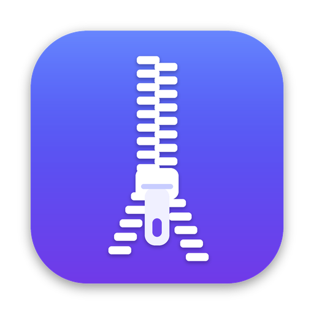

Real encryption
AES-256 ZIP that 7-Zip can open, and 7z with hidden file names. Passwords never appear on a command line and are saved to your Keychain only if you ask.

Archive manager for macOS
Zipper creates, opens, tests and converts almost every archive format on your Mac. It looks inside archives like Finder does, and it’s safe by default.

The formats you actually run into, and plenty you don’t
Everything you need from an archive tool, built natively for the Mac and kept out of your way.
Double-click an archive and browse it like a folder, without extracting anything first.
Archives from the internet can be hostile. Every file Zipper extracts, whichever engine read it, goes through one checked path that refuses anything that could harm your Mac.
It’s tested against hostile archives and mutation fuzzing. Apps and scripts inside an archive are never opened automatically.
../../Library/LaunchAgentsBlockedAES-256 ZIP that 7-Zip can open, and 7z with hidden file names. Passwords never appear on a command line and are saved to your Keychain only if you ask.
Quick Actions like Compress to ZIP, Extract Here and Extract To…, a Space-bar preview of any archive, and actions for the Shortcuts app.
Pick a format, then Faster, Normal or Smaller. Dictionary sizes, solid blocks and threads are there when you want them, tucked out of the way.
Test integrity, repair damaged ZIPs, convert between formats with SHA-256 verification, split and join, checksums, compare archives and find duplicates.
Files over 4 GB, flat memory use while streaming, and cancelling that never leaves half-written output behind.
Everything happens on your Mac. Zipper has no network code, no analytics and no update checks. It works fully offline.
Archives Zipper writes open correctly in Info-ZIP, 7-Zip, GNU tar and Python. RAR 2–5 opens too, including solid, encrypted and multi-volume sets.
The zipper tool is built in: compress, extract with verification, and list what your Mac can read and write.
Written in Swift and SwiftUI with standard menus and shortcuts, Light and Dark Mode, and a universal build for Apple silicon and Intel.
One window, a few focused sheets, and nothing to configure before you start.

Drop files here to compress them, or drop an archive to open it.


Universal for Apple silicon and Intel Macs, on macOS 14 Sonoma or later.
Get the latest Zipper disk image.
Zipper-1.0.0.dmgOpen the disk image and drag Zipper onto the Applications folder.
Launch Zipper from Applications or Spotlight, then drop in your first archive.
This build isn’t notarized by Apple yet, so the first launch needs one extra step:
zipper into your path.brew install unar for StuffIt, Compact Pro, Zoo, Amiga formats and more.brew install zpaq lrzip lzop adds those formats.rar, and Zipper will use it.